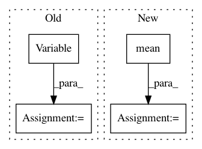

e7a02b6293100e21ef15870fd0f9069beaae5290,train.py,,,#,21
Before Change
batch_size = data.size(0)
running_batch_sizes += batch_size
real_label = Variable(torch.ones(batch_size))
fake_label = Variable(torch.zeros(batch_size))
////////////////////////////////////////////////////////
// (1) Update D network: maximize log(D(x)) + log(1 - D(G(z)))
//////////////////////////////////////////////////////
After Change
g_loss = generator_criterion(fake_out, fake_img, real_img)
running_g_loss += g_loss.data[0] * batch_size
d_loss = - torch.mean(torch.log(real_out) + torch.log(1 - fake_out))
running_d_loss += d_loss.data[0] * batch_size
running_fake_scores += fake_scores
train_bar.set_description(desc="[%d/%d] Loss_D: %.4f Loss_G: %.4f D(x): %.4f D(G(z)): %.4f"
In pattern: SUPERPATTERN
Frequency: 3
Non-data size: 4
Instances
Project Name: leftthomas/SRGAN
Commit Name: e7a02b6293100e21ef15870fd0f9069beaae5290
Time: 2017-12-02
Author: leftthomas@qq.com
File Name: train.py
Class Name:
Method Name:
Project Name: cornellius-gp/gpytorch
Commit Name: 959661cb22f8f29a7175aecc008fde22652aaee2
Time: 2017-08-18
Author: jrg365@cornell.edu
File Name: gpytorch/inference/posterior_models/variational_gp_posterior.py
Class Name: _VariationalGPPosterior
Method Name: marginal_log_likelihood
Project Name: eriklindernoren/PyTorch-GAN
Commit Name: f37d0f2da815d3674dbba5ef1d8711357348c94f
Time: 2018-05-07
Author: eriklindernoren@live.se
File Name: implementations/wgan/wgan.py
Class Name:
Method Name: